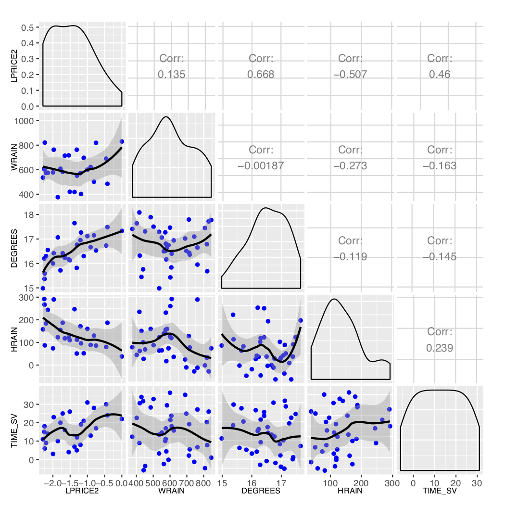
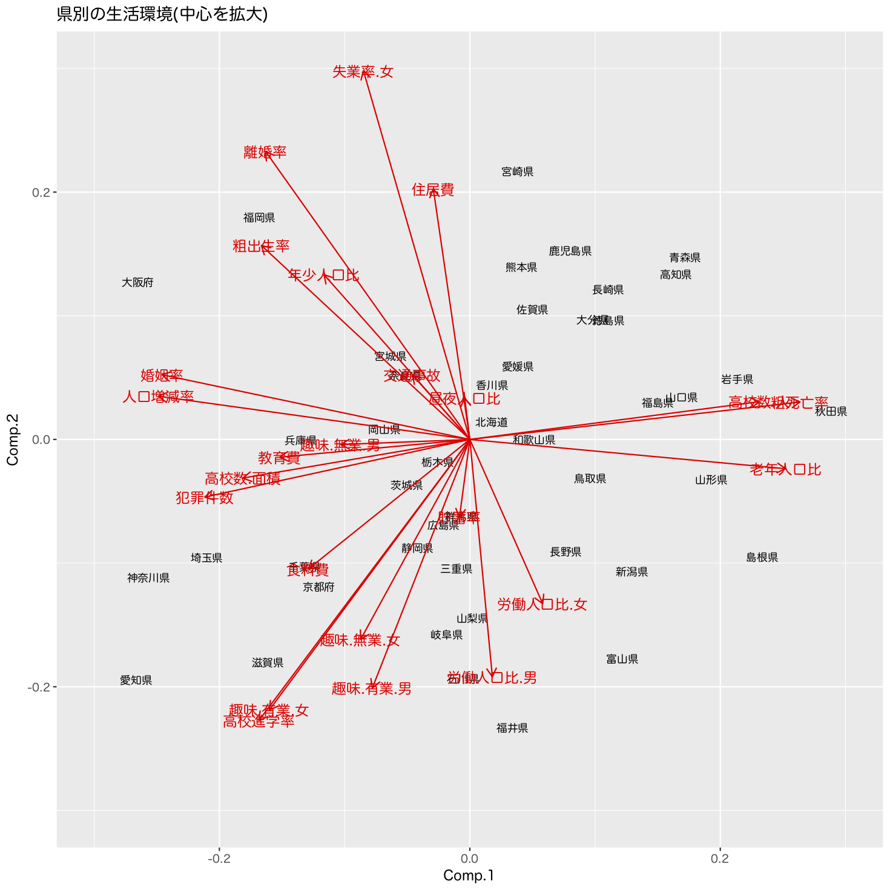
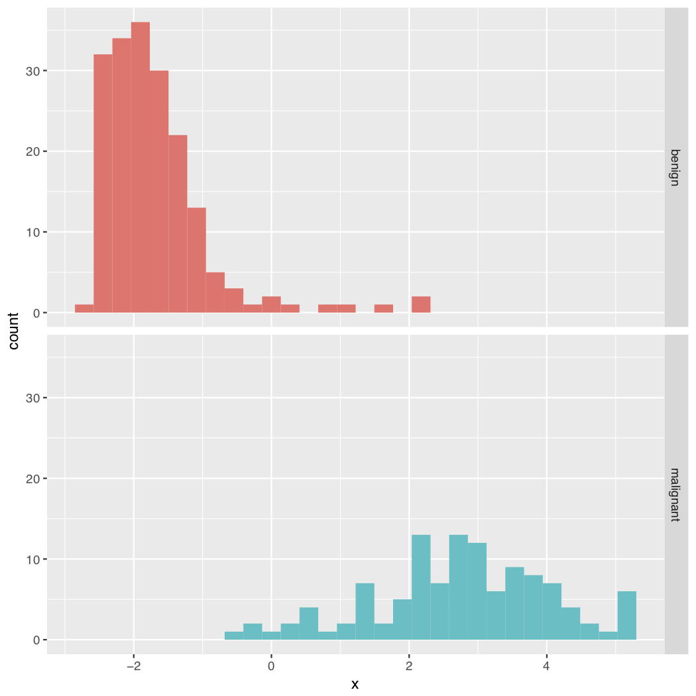

講義の概要
数理科学続論J (統計データ解析)
(Press ? for help, n and p for next and previous slide)
講義について
講義の概要
- 講義名: 数理科学続論J (統計データ解析II)
- 担当: 村田 昇
- 授業の目標
- 統計ソフトウェアRの基本的な扱いを習得する
- 統計解析手法である 多変量解析 の基本的な解析法に習熟する
- 大規模データから効果的に情報を抽出する
- データの背後に潜む統計的構造を分析する
- 解析法の数理科学的側面を理解する
- Rを用いて実データに多変量解析を適用する
受講にあたっての注意
- 微分積分学，線形代数学および確率統計学が既習であること(が望ましい)
- 自身でRの環境を準備できること
- 講義の資料はITC-LMSを通して公開する
- 成績評価は課題の提出による
講義計画 (予定)
- 統計ソフトウェアRの使い方 (3回)
- Rのインストールと基礎
- データの取り扱い
- グラフの描き方
- 確率的シミュレーション
- 回帰分析 (3回)
- 主成分分析 (2回)
- 判別分析 (2回)
- クラスタ分析 (1回)
- 時系列解析入門 (2回)
多変量解析とは
- 複数の変量からなるデータを分析する手法の総称
- 回帰分析: 複数の量を用いて注目する変数の値を説明する
- 主成分分析: 全体を説明する少数の特徴量を構成する
- 判別分析: 特徴量の違いでカテゴリ分けを行う
- クラスタ分析: 特徴量の違いに着目してクラスタを構成する
- 時系列解析: 時間とともに変化する現象を記述する
回帰分析
回帰分析の考え方
- ある変数を別の変数によって説明・予測するための関係式(回帰式)を構成する
- 単回帰: 一つの変数で目的変数を説明する
- 重回帰: 複数の変数で目的変数を説明する
- 分析の事例:
- 身長から体重を予測する式を作り，ある身長の人がある体重だったときに，それが普通かどうか判定する
- 築年数・駅からの距離・広さ・間取りで家賃を説明する式を作り，新規に家賃を設定する際に利用する

Figure 1: 体重と脳の重さの関係 (単回帰)

Figure 2: ワインの価格と生産環境の関係

Figure 3: 生産環境によるワイン価格の予測 (重回帰)
主成分分析
主成分分析の考え方
- 多数の変数が与えられたときに，変数のもつ構造を効率的に記述できる少数個の特徴量を構成する
- 分析の事例:
- 野球選手の打撃成績(打率，本塁打数，打点など)から，打者としての特徴を記述する指標を作成する
- 複数銘柄からなる株価の時系列データから，市場全体の変動を記述する総合指標を作成する

Figure 4: 県別の生活環境(人口動態)の散布図

Figure 5: 県別の生活環境(教育・労働)の散布図

Figure 6: 県別の生活環境(貯蓄・余暇)の散布図

Figure 7: 県別の生活環境の主成分分析
判別分析
判別分析の考え方
- ある個体が複数のクラスのいずれかに属するとき，その個体の特徴量からどのクラスに属するか予測するモデルを構築する
- 分析の事例:
- 花の種類を，その花の花弁の幅・長さおよび萼片(がくへん)の幅・長さから判別する
- 食道がんを患っている人とそうでない人を，年齢・飲酒量・喫煙度から判別する

Figure 8: 乳癌患者(良性・悪性)の生研検査の散布図

Figure 9: 生研検査の主成分分析

Figure 10: 生研検査による乳癌患者の判別分析
クラスタ分析
クラスタ分析の考え方
- 特徴量の違いに着目して，妥当な個体のグループ(クラスタ)を構成する
- 階層的な方法: 系統樹を作成する
- 非階層的な方法: グループの代表値を推定する
- 分析の事例:
- 映画に関するアンケート調査から潜在的なジャンル(グループ)を抽出する
- 顧客の購買履歴から，嗜好の異なる顧客グループに分類し，グループごとの販売戦略を立てる

Figure 11: おむすびの具に関するアンケート分析 (県別の集計)

Figure 12: アンケート結果にもとづく県のクラスタ分析
時系列解析
時系列解析の考え方
- 時間とともに変化する現象を記述するために，未来の値を過去の値で近似する式を構成する
- 自己回帰 (ARモデル): 過去の影響の記述
- 移動平均 (MAモデル): 記憶のある不確定性
- 分析の事例:
- 市町村の過去の年齢別の人口変動から将来の人口比率を予測する
- 食品・飲料の季節ごとの販売履歴から将来の需要量を予測する

Figure 13: 航空機旅客量の変遷

Figure 14: 階差時系列の自己相関分析

Figure 15: 航空機旅客量の予測 (SARIMAモデルによる)